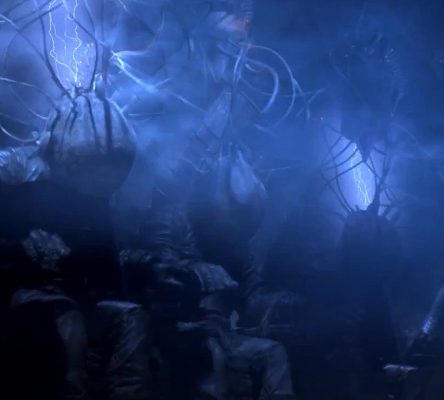

Mad God (2022)
Animation Pioneer Phil Tippet stop motion animation Sci-Fi Horror...!

They Live

Big Trouble in Little China

The Last Starfighter

More to Come soon. I will be building this Project little by little. It's kind of building itself.
Animation Pioneer Phil Tippet stop motion animation Sci-Fi Horror...!